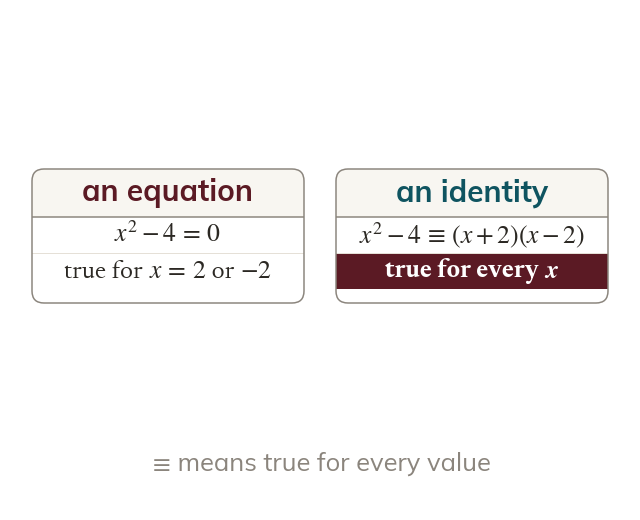
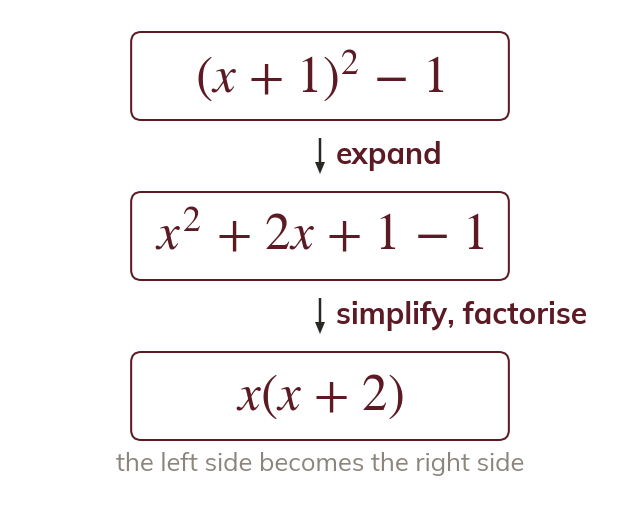
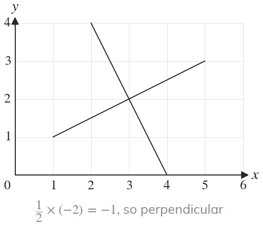
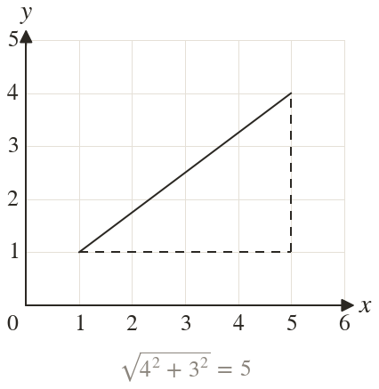

An identity holds for every x
An equation is true for some values of but an identity is true for every value. The symbol ≡ marks an identity.
An identity is true for every value of so it is proved by turning one side into the other, never by checking values. Coordinates let the same method prove geometric facts, such as a right angle or a parallelogram; next lesson adds proof by exhaustion and disproof by counter-example.
Work down the page at your own pace. Write every answer in your book first, then click to check it.
Read each card, then follow the worked examples one step at a time.

An equation is true for some values of but an identity is true for every value. The symbol ≡ marks an identity.

Start with one side and change it, step by step, until it is the other side. Never change both sides at once.
Pick an answer. If it's wrong, the feedback tells you which mistake it was.
Read each card, then follow the worked examples one step at a time.

Parallel lines have equal gradients. The gradients of perpendicular lines multiply to

The distance between two points is the hypotenuse of a right-angled triangle, found by Pythagoras. Two equal distances prove that two sides are equal.
Pick an answer. If it's wrong, the feedback tells you which mistake it was.
Finished? Next lesson: 7.5 Methods of Proof.
For each skill, tap the one that is true for you today. Your Revise pages start with anything you mark Not yet.
Your ratings are saved on this device only.
Log in, then search for a code to practise that skill.